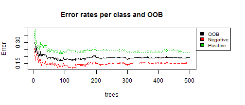

Cardiovascular diseases (CVDs) or Heart Diseases, are disorders of the heart and blood vessels and include coronary heart disease, cerebrovascular disease, rheumatic heart disease and other conditions.
It is number one cause of death in adults globally.
People with cardiovascular disease or who are at high cardiovascular risk (due to the presence of one or more risk factors such as hypertension, diabetes, hyperlipidaemia or already established disease) need early detection and management using counseling and medicines, as appropriate.
Medical diagnosis is an important but a complex task that demands high accuracy.
Automation of diagnosis has huge advantage that can aide healthcare providers in efficiently identifying and providing the treatment as needed in a timely manner.
Heart Disease Prediction
Bhavana Shah
December 27, 2015
Abstract
Application & Features
The application is built using Shiny app. It predicts heart disease using Random Forest Algorithm.
The data is obtained from UCI Machine Learning Repository.
This app is using 'processed.cleveland.data'. This dataset contains 76 attributes, out of which only a subset of 14 of them have been used.
Prior to building the Random Forest model, the data is split into training (70%) and testing sets (30%).
Random Forest number of trees can be selected by the user (range 100-1000). The default is 500. The model gets dynamically re-built on changing the number of trees and updates all the visualizations plots.
Data can be viewed, searched and sorted from the 'Data' Tab.
Correlation matrix and pairs plot are displayed for data exploration purposes in the 'Exploration' Tab.
UI & Visualization

Visualization for Error rate

Future Enhancements

In order to advance this app:
- Obtain and utilize large datasets.
- Build & compare using additional machine learning algorithms such as SVM, knn.
- User prediction screen (as shown in image) for prediction against various models.